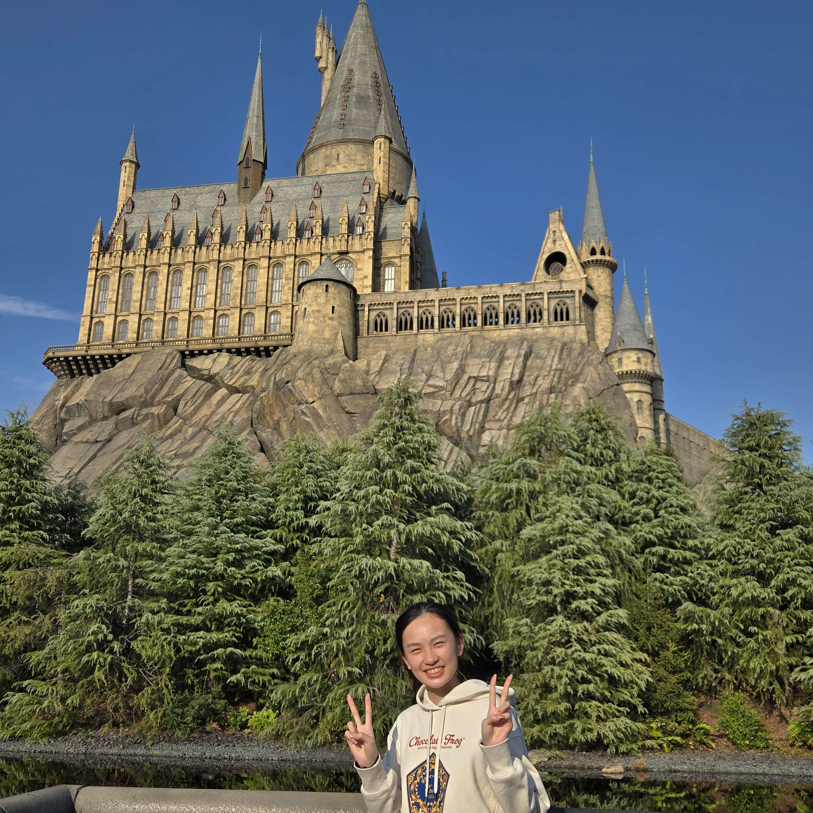

Hello!

Welcome to My Web Page!
This website is an introduction to who I am, what my life is like, and personal reviews and recommendations for food and activities if you ever come to Melbourne!
My Introduction
My name is Mayland Chen, and I am a current student at Swinburne University of Technology, studying a double degree in Bachelor of Games and Interactivity and Bachelor of Animation.
Outside of class and work, I mostly spend my free time at home playing video games, chatting with my friends, or playing video games with my friends.
Games including but not limited to:
- Valorant
- League of Legends
- Overwatch
- Lots of Gacha games
- and most recently: Super Battle Golf!
About the Picture
The image above is a picture of me when I visited Universal Studios Japan! It features the Hogwarts Castle inside The Wizarding World Of Harry Potter, which is one of my interests.